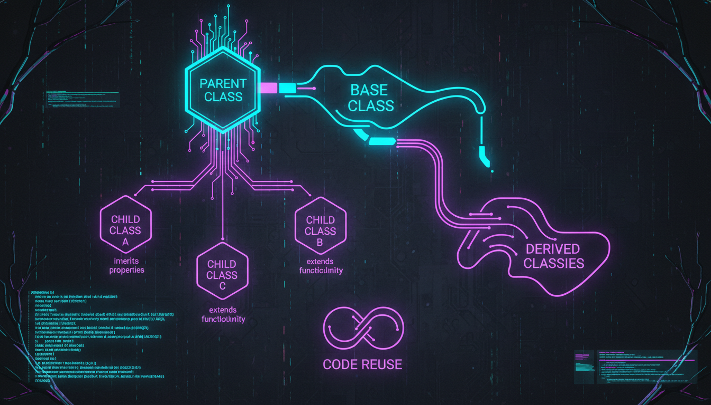

Базовий клас, похідний клас, extends, доступ до базових членів

Наслідування дозволяє створювати нові класи на основі існуючих, успадковуючи їхні властивості та методи.
#include <iostream>
#include <string>
// Базовий клас
class Animal {
protected:
std::string name;
int age;
public:
Animal(std::string n, int a) : name(n), age(a) {}
void eat() {
std::cout << name << " їсть." << std::endl;
}
void sleep() {
std::cout << name << " спить." << std::endl;
}
void introduce() {
std::cout << "Я " << name << ", мені " << age << " років." << std::endl;
}
};
// Похідний клас
class Dog : public Animal {
private:
std::string breed;
public:
Dog(std::string n, int a, std::string b)
: Animal(n, a), breed(b) {}
void bark() {
std::cout << name << " гавкає: Гав-гав!" << std::endl;
}
void fetch() {
std::cout << name << " приносить м'яч." << std::endl;
}
};
int main() {
Dog dog("Барон", 3, "Вівчарка");
dog.introduce(); // Успадкований метод
dog.eat(); // Успадкований метод
dog.bark(); // Власний метод
dog.fetch(); // Власний метод
return 0;
}